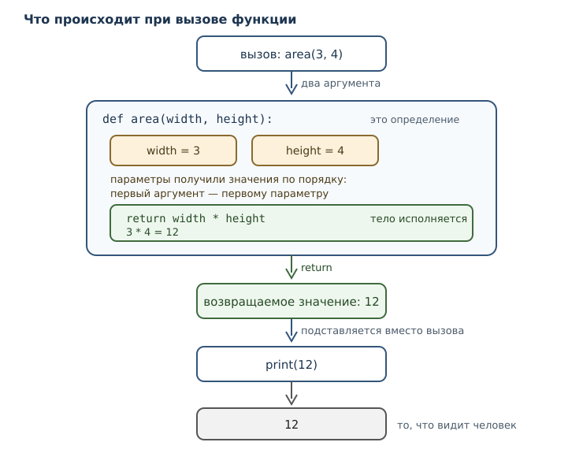
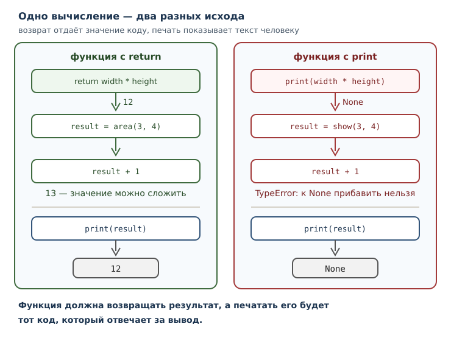

Функции: параметры, аргументы и области видимости
Как выделять поведение в функцию, передавать данные и возвращать результат.
В этой главе
К этой главе программа умеет вычислять, выбирать и повторять, но остаётся
одним длинным списком инструкций. Чем больше задач, тем труднее такой список
читать: через сто строк уже не помнишь, зачем нужна переменная t, а
одинаковые вычисления приходится копировать в нескольких местах и потом
исправлять во всех сразу.
Функция решает обе проблемы. Она даёт имя фрагменту работы, а значит, позволяет вызвать этот фрагмент из любого места и описать его поведение один раз. Функция принимает данные через параметры и возвращает результат, поэтому её можно использовать как строительный блок: собирать из маленьких понятных частей большие программы.
Эта глава — поворотная. До сих пор вы писали линейные сценарии; после неё программа становится набором функций с именами, и именно так выглядит профессиональный код.
7.1 Что вы сможете после этой главы
К концу главы вы будете уметь следующее.
- выделять повторяющееся вычисление в функцию с понятным именем;
- различать параметр и аргумент и не путать их в объяснениях;
- возвращать результат и объяснять, чем
returnотличается отprint; - передавать аргументы по позиции и по имени;
- задавать аргументы по умолчанию и понимать, когда они вычисляются;
- объяснять, почему имя, созданное внутри функции, не видно снаружи.
7.2 Зачем нужна функция
Начнём с задачи, в которой видно проблему. Нужно посчитать площадь двух прямоугольников и их суммарную площадь.
first = 3 * 4
second = 2 * 3
print(first)
print(second)
print(first + second)
12
6
18
Пока вычислений два, всё просто. Но представьте, что формула изменится —
например, понадобится округлять результат или учитывать единицы измерения.
Придётся найти все места с * и исправить каждое, ничего не пропустив. Чем
больше копий, тем выше риск.
Перепишем программу с функцией:
def area(width, height):
return width * height
print(area(3, 4))
print(area(2, 3))
print(area(3, 4) + area(2, 3))
12
6
18
Результат тот же, но теперь формула записана один раз и у неё есть имя
area. Если правило изменится, править нужно одну строку. Если понадобится
третий прямоугольник, добавится одна строка вызова, а не три строки
вычислений.
Функция — именованный блок кода, который можно вызывать многократно. У неё есть имя, а параметры и возвращаемое значение — не всегда:
- имя — по нему функцию вызывают; оно есть у любой функции;
- параметры — данные, которые функция принимает; их может не быть;
- результат — значение, которое она возвращает вызывающему коду; если
returnнет, результатом становитсяNone.
7.3 Инструкция def и вызов функции
Функцию создаёт инструкция def. Она связывает имя с объектом-функцией: до вызова тело не исполняется, интерпретатор только запоминает, что делать при вызове.
def greet():
print("Привет!")
print("функция определена")
greet()
greet()
функция определена
Привет!
Привет!
Обратите внимание на порядок: строка функция определена печатается раньше
приветствия, хотя def записан выше. Определение лишь создаёт функцию; работа
начинается в момент вызова функции — выражения имя(аргументы).
Тело функции выделяется отступом, как тело условия или цикла. Всё, что относится к функции, сдвинуто вправо; строка без отступа — уже не часть функции.
У функции может не быть параметров: greet() ничего не принимает. Но чаще
данные нужны, и тогда в скобках def перечисляются имена.
7.4 Параметры и аргументы
Два слова, которые постоянно путают, и различать их нужно строго.
- Параметр — имя в определении функции. В записи
def greet(name):словоname— параметр. - Аргумент — значение, которое передаётся при вызове. В записи
greet("Анна")строка"Анна"— аргумент.
Проще говоря: параметр — это «место» в определении, аргумент — то, что в это место попало при конкретном вызове. У одной функции много вызовов, и у каждого свой аргумент.
def greet(name):
return f"Привет, {name}!"
print(greet("Анна"))
print(greet("Борис"))
Привет, Анна!
Привет, Борис!
При вызове Python сопоставляет аргументы параметрам и создаёт для них имена
внутри функции. name существует только во время этого вызова: в следующем
вызове появится новое name с новым значением.

Сопоставление по порядку работает так: первый аргумент попадает первому параметру, второй — второму.
def power(base, exp):
return base ** exp
print(power(2, 10))
print(power(10, 2))
1024
100
Два вызова с одинаковыми числами и разными результатами: 2 в степени 10
равно 1024, а 10 в степени 2 равно 100. Порядок аргументов значим, и
перепутать его легко, потому что оба числа выглядят одинаково допустимо.
7.5 Возвращаемое значение и return
Инструкция return завершает функцию и передаёт вызывающему коду возвращаемое значение. Именно это значение подставляется вместо вызова в выражении.
def area(width, height):
return width * height
print(area(3, 4))
print(area(2, 3) + area(4, 5))
12
26
Во второй строке два вызова участвуют в сложении: каждый вернул число, и +
сложил числа. Функция, которая возвращает результат, ведёт себя как обычное
значение — её можно сравнивать, складывать и подставлять в f-строку.
return завершает функцию немедленно: код после него в этом вызове не
выполняется. Это позволяет записать проверку и сразу выйти:
def check(n):
if n < 0:
return "отрицательное"
return "неотрицательное"
print(check(-5))
print(check(0))
отрицательное
неотрицательное
Для -5 сработал первый return, и до второго дело не дошло. Для 0 первое
условие ложно, поэтому выполнился второй return.
Если функция дошла до конца, не встретив return, её результатом становится
None. То же происходит при return без выражения:
def nothing():
return
value = nothing()
print(value)
print(nothing() is None)
None
True
Это не мелочь: функция без return возвращает None, и попытка использовать
такой результат в арифметике приведёт к ошибке TypeError.
print не возвращает значение
Самое частое непонимание на этом этапе — путать печать и возврат. print
показывает значение в терминале, но сам ничего не возвращает. Проверим:
result = print("печатаю")
print(result)
печатаю
None
Сначала print вывел строку, затем вернул None, и этот None был присвоен
имени result. Если бы функция должна была вернуть число, а вместо return
внутри стоял print, снаружи получился бы None, а не число.

Правило: return — для того, кто вызывает; print — для человека, который
смотрит на экран. Обычно функция должна возвращать результат, а печатать его
будет тот код, который отвечает за вывод.
7.6 Позиционные и именованные аргументы
Аргумент можно передать двумя способами. Позиционный аргумент сопоставляется
параметрам по порядку. Именованный аргумент записывается как
параметр=значение и сопоставляется по имени, независимо от порядка.
def power(base, exp):
return base ** exp
print(power(2, 10))
print(power(exp=10, base=2))
1024
1024
Результат один и тот же: во втором вызове порядок задан именами. Именованный аргумент удобен, когда у функции много параметров и хочется явно показать, что куда передаётся.
Правила смешивания простые: позиционные аргументы идут первыми, именованные — после них. Именованный аргумент перед позиционным — синтаксическая ошибка, потому что Python не смог бы понять, какому параметру отдать позицию.
def power(base, exp):
return base ** exp
print(power(base=2, 10))
Вот как выглядит корректное смешивание:
def power(base, exp):
return base ** exp
print(power(2, exp=3))
8
Если аргументов не хватает или их слишком много, вызов завершается ошибкой
TypeError с точным описанием. Такие сообщения полезно читать, а не
игнорировать: в них указано имя функции и имя параметра.
def power(base, exp):
return base ** exp
print(power(2))
TypeError: power() missing 1 required positional argument: 'exp'
7.7 Аргументы по умолчанию
Аргумент по умолчанию задаёт значение параметра на случай, если при вызове
его не передали. В определении это выглядит как параметр=значение.
def greet(name, greeting="Привет"):
return f"{greeting}, {name}!"
print(greet("Анна"))
print(greet("Анна", "Здравствуй"))
print(greet("Анна", greeting="Добрый день"))
Привет, Анна!
Здравствуй, Анна!
Добрый день, Анна!
Три вызова — три способа: без второго аргумента, с позиционным вторым и с
именованным вторым. Все три работают, потому что у greeting есть значение по
умолчанию.
Важная деталь: значение по умолчанию вычисляется один раз, в момент определения функции, а не при каждом вызове. Для чисел и строк это не заметно, потому что они неизменяемы. Но если однажды значением по умолчанию станет изменяемый объект, все вызовы будут делить одно и то же состояние — подробный разбор этого случая будет в главе 18. Пока достаточно запомнить правило: значение по умолчанию вычисляется один раз.
Параметры с умолчаниями должны идти после параметров без них. Иначе получится неоднозначность: непонятно, какому параметру отдать единственный позиционный аргумент.
7.8 Локальная область видимости
Локальная область видимости — область, в которой видны имена, созданные внутри функции. Эти имена существуют только во время вызова и исчезают после его завершения.
def make():
y = 10
return y
print(make())
10
Имя y создано внутри функции. Снаружи его нет:
def make():
y = 10
return y
print(make())
print(y)
NameError: name 'y' is not defined
Именно NameError: имя y не определено в том месте, где его пытаются
прочитать. Это не сбой, а следствие того, что у функции своя область имён.
Параметры тоже локальны: name из greet существует только внутри вызова.
Снаружи внутрь, однако, смотреть можно: глобальные имена видны в функции.
x = 5
def show():
print(x)
show()
5
А вот переприсвоить глобальное имя из функции простая запись не позволяет. Если имя присваивается внутри функции, Python считает его локальным — и тогда чтение до присваивания становится ошибкой.
x = 5
def broken():
print(x)
x = 10
broken()
UnboundLocalError: cannot access local variable 'x' where it is not associated with a value
Сообщение точное: x считается локальным именем, но к моменту чтения ещё не
связан со значением. Полная модель областей видимости, включая инструкцию
global, будет в следующей главе. Пока достаточно правила: имена, которым
функция присваивает значения, локальны для неё.
Практический вывод: не делайте функцию неявно зависящей от глобальных имён. Передавайте данные через параметры и возвращайте результат — тогда функцию можно понять, не читая всю программу.
7.9 docstring: документация внутри функции
Первая инструкция функции может быть строковым литералом — docstring (строка
документации). Это не комментарий: строка остаётся частью функции и доступна
через атрибут __doc__, а инструменты показывают её в справке.
def area(width, height):
"""Вернуть площадь прямоугольника."""
return width * height
print(area(3, 4))
print(area.__doc__)
12
Вернуть площадь прямоугольника.
Запись area.__doc__ — обращение к атрибуту объекта через точку; подробно
атрибуты разбираются в главе 25.
Хороший docstring отвечает на вопрос «что делает функция и что она возвращает», а не пересказывает код. Договорённость о формате описана в PEP 257; для небольших учебных функций достаточно одной точной фразы. В английских docstring PEP 257 рекомендует повелительное наклонение, а в русскоязычной документации принят инфинитив: «Вернуть площадь прямоугольника».
Комментарий # умножаем ширину на высоту здесь бесполезен: это видно из кода.
Строка «Вернуть площадь прямоугольника» полезна: она называет смысл операции и
единицу измерения результата.
7.10 Как проектировать функцию
Функция — не просто способ сократить запись. Это способ назвать часть задачи. Несколько правил, которые делают функции полезными.
Одна ответственность. Функция должна делать одну вещь, и её имя должно
называть эту вещь. area(width, height) — хорошо. process(width, height) —
плохо: непонятно, что значит «обработать».
Параметры вместо глобальных имён. Если функция читает глобальную переменную, её поведение зависит от состояния всей программы. С параметрами функция самодостаточна и её легко проверить.
Результат вместо печати. Функция, которая возвращает значение, годится и для вывода, и для дальнейших вычислений. Функция, которая только печатает, годится только для вывода.
Короткое тело. Если функция не помещается на экран, скорее всего, внутри несколько задач. Их стоит разделить.
Функции можно вызывать друг из друга. Это естественный способ строить программы: маленькие функции складываются в более крупные.
def double(n):
return n * 2
def quadruple(n):
return double(double(n))
print(quadruple(5))
20
quadruple не знает, как удваивать число, — она поручает это double.
Каждая функция описывает свой уровень задачи, и читать такую программу легче,
чем одну длинную формулу.
7.11 Собираем вместе
Соберём функцию, которая считает итог заказа со скидкой. Скидка — необязательный параметр, поэтому у неё есть аргумент по умолчанию.
def order_total(price, count, discount=0):
total = price * count
return total - total * discount // 100
print(order_total(250, 3))
print(order_total(250, 3, 10))
print(f"К оплате: {order_total(250, 3, 10)} рублей")
750
675
К оплате: 675 рублей
Разберём устройство: price и count — обязательные параметры, discount —
параметр со значением по умолчанию. Внутри создаётся локальное имя total,
которое не видно снаружи и не мешает другим функциям. Возвращается число,
поэтому результат можно напечатать, подставить в f-строку или передать дальше.
Проверить функцию на разных данных теперь легко: меняются только аргументы, а тело остаётся прежним.
7.12 Типичные ошибки
- Путать print и return. Функция с
printвместоreturnвозвращаетNone; снаружи вместо числа будетNone. - Забыть вызвать функцию. Запись
areaбез скобок — это ссылка на функцию, а не результат.print(area)выведет служебное представление объекта, а не площадь. - Перепутать порядок позиционных аргументов.
power(10, 2)— не то же самое, чтоpower(2, 10). При сомнении используйте именованные аргументы. - Считать, что имя из функции видно снаружи. Локальные имена исчезают после завершения вызова.
- Присваивать глобальному имени внутри функции без подготовки. Python
сделает имя локальным и чтение до присваивания даст
UnboundLocalError. - Ставить параметр с умолчанием перед обязательным. Такой
defне разбирается: непонятно, как сопоставлять аргументы. - Ожидать нового значения по умолчанию при каждом вызове. Оно вычисляется один раз при определении функции.
- Давать функции имя, не описывающее результат.
do_it,handle,processничего не сообщают читателю.
7.13 Упражнения
1. Первая функция
Напишите функцию rectangle_area(width, height), которая возвращает площадь
прямоугольника. Вызовите её для 3 и 4, напечатайте результат.
2. Параметр или аргумент
В коде ниже выпишите параметры и аргументы отдельными списками:
def repeat(text, times):
return text * times
print(repeat("да", 3))
Сколько параметров у функции? Сколько аргументов в вызове?
3. Печать или возврат
Сравните две функции:
def show_area(width, height):
print(width * height)
def get_area(width, height):
return width * height
Что выведет show_area(2, 5)? Что вернёт get_area(2, 5)? Почему
print(show_area(2, 5) + 1) приводит к ошибке, а
print(get_area(2, 5) + 1) — нет?
4. Порядок аргументов
Функция power(base, exp) возвращает base ** exp. Что вернут вызовы
power(2, 5), power(5, 2), power(exp=2, base=5)? Объясните разницу.
5. Аргумент по умолчанию
Напишите функцию ticket_price(age, base=600), которая возвращает цену
билета: для возраста до 18 лет — половина базовой цены, иначе базовая. Проверьте
на возрастах 12 и 30.
6. Исправление ошибки вызова
Код падает:
TypeError: power() missing 1 required positional argument: 'exp'
Вот функция и вызов:
def power(base, exp):
return base ** exp
print(power(2))
Объясните причину и исправьте вызов двумя способами: позиционным аргументом и именованным.
7. Локальная область
Что произойдёт при выполнении программы? Объясните.
def compute():
result = 42
return result
print(compute())
print(result)
8. docstring
Напишите функцию celsius_to_fahrenheit(celsius), которая переводит
температуру по формуле celsius * 9 / 5 + 32. Добавьте docstring и напечатайте
его через __doc__. Проверьте на 0 и 100.
9. Функция из функции
Напишите функции square(n) и sum_of_squares(a, b), где вторая использует
первую. Проверьте на a = 3, b = 4.
10. Мини-задача: чек
Напишите функцию order_total(price, count, discount=0), которая возвращает
итог заказа: стоимость без скидки минус скидка в целых рублях. Затем напишите
функцию format_receipt(price, count, discount=0), которая вызывает первую и
возвращает строку вида Товаров: 3, к оплате: 675 рублей. Проверьте на
250, 3 и скидке 10.
7.14 Проверка понимания
- Чем параметр отличается от аргумента?
- Почему тело функции не выполняется в момент определения?
- Чем
returnотличается отprintи почему это важно? - Что вернёт функция, в которой нет
return? - Как передать аргумент по имени и зачем это нужно?
- Когда вычисляется значение аргумента по умолчанию?
- Почему локальное имя не видно снаружи функции?
- Почему
power(base=2, 10)— синтаксическая ошибка? - Зачем нужен docstring, если есть комментарии?
7.15 Что дальше
Функции уже позволяют строить программы из частей. Но осталось много вопросов: сколько вызовов может быть активно одновременно, откуда функция знает о внешних именах, как работает вызов функции из неё самой. Дальше появятся стек вызовов, полная модель областей видимости и рекурсия — приём, который делает функции особенно выразительными.